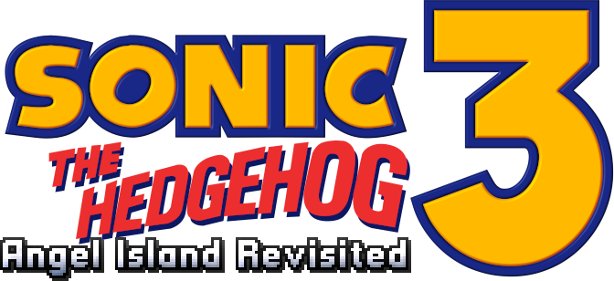

Sonic 3 Angel Island Revisited é um remaster não oficial de Sonic 3 & Knuckles, criado por Eukaryot.
Ele inclui correções de bugs, uma grande quantidade de opções e modos extras em comparação ao jogo original;
É necessário ter uma cópia da rom de Sonic 3 & Knuckles para jogá-lo
Sonic 3 Angel Island Revisited é
um remaster não oficial de
Sonic 3 & Knuckles, criado
por Eukaryot.
Ele inclui correções de bugs,
uma grande quantidade de
opções e modos extras
em comparação ao jogo original.